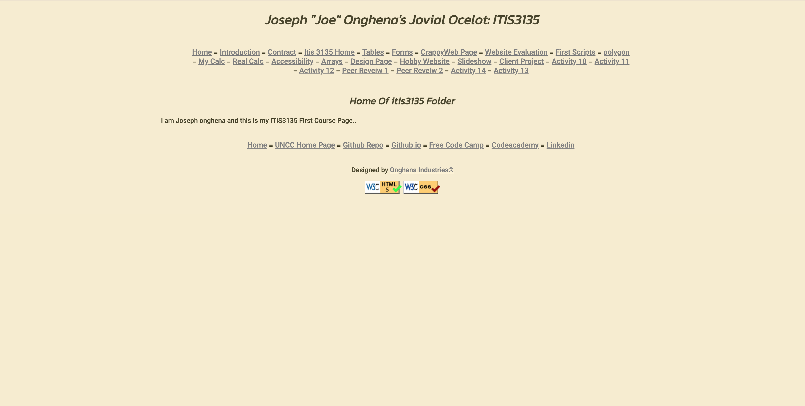

Peer Review: 1
Joseph Onghena
The Good
- Great contrast along with colors. Visuals are important and yours definitely achieves the perfect balance
- Simplicity many times is key and you have done a great job of not overfilling your page with unnecessary stuff
- All pages seemed to have great build and allow for easy accesses and traversal for the user
The Bad
- While this is not a big deal the nav bar being underlined takes away from its purpose. If it where to be underlined maybe through a hover effect or some other manner but not always underlined
- The polygon does not match the same as all the others and does not work as intended by the requirments of the assigment
The Ugly
- Navagation menu on many pages seems cluttered and this is due to the amount of links along with the selected font size and divider. I recommend finding a potential more clean way to have these links as in its current state it looks more like a blob of text.
Other than those issues your website is great and I love the simplicity which ties everything together!